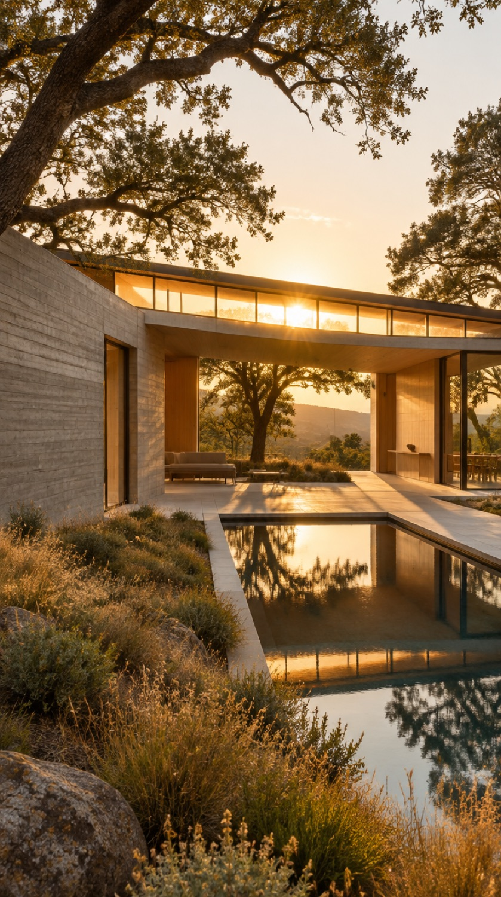

Simplicity, in your words, is stripping away the unnecessary. Erase the clutter off the vellum, then bring the sun in.
Houses that listen to the land and let the light do the talking. Gordon is in awe of what you build. Fight on, Brooklyn.